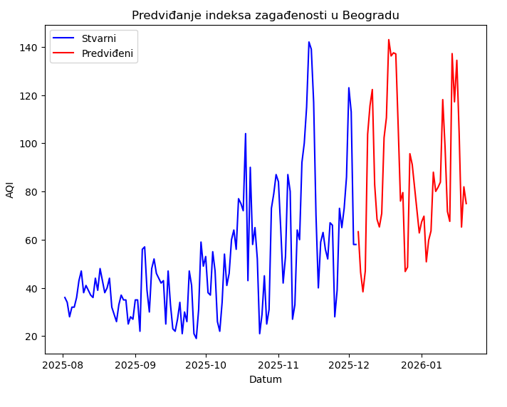
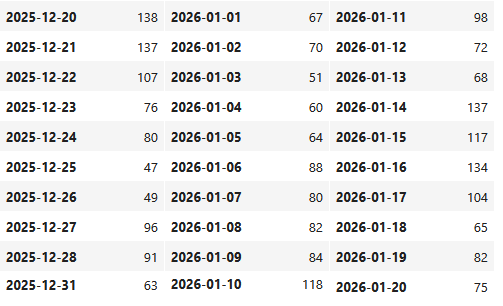

Prosečna vrednost indeksa zagađenosti (AQI) za posmatrani mesec je 87


| AQI Opseg | Kategorija | Opis | Preporuke |
|---|---|---|---|
| 0 - 50 | Dobar | Kvalitet vazduha se smatra zadovoljavajućim, a zagađenje vazduha predstavlja mali rizik ili nikakav rizik. | Nijedan |
| 51 - 100 | Umereno zagađen | Kvalitet vazduha je prihvatljiv; međutim, za neke zagađivače može postojati umerena zabrinutost za zdravlje veoma malog broja ljudi koji su neobično osetljivi na zagađenje vazduha. | Aktivna deca i odrasli, kao i ljudi sa respiratornim oboljenjima, kao što je astma, trebalo bi da ograniče produženi napor na otvorenom. |
| 101 - 150 | Nezdrav za osetljive grupe | Pripadnici osetljivih grupa mogu imati zdravstvene posledice. Najverovatnije neće uticati na širu javnost. | Aktivna deca i odrasli, kao i ljudi sa respiratornim oboljenjima, kao što je astma, trebalo bi da ograniče produženi napor na otvorenom. |
| 151 - 200 | Nezdrav | Svako može početi da doživljava zdravstvene efekte; pripadnici osetljivih grupa mogu imati ozbiljnije zdravstvene posledice. | Aktivna deca i odrasli, kao i osobe sa respiratornim oboljenjima treba da izbegavaju produženi napor na otvorenom; svi ostali treba da ograniče produženi napor. |
| 201 - 300 | Veoma nezdrav | Zdravstvena upozorenja o vanrednim situacijama. Veća je verovatnoća da će cela populacija biti pogođena. | Aktivna deca i odrasli, kao i ljudi sa respiratornim oboljenjima treba da izbegavaju sve napore na otvorenom. |
| 300+ | Katastrofalan | Zdravstveno upozorenje: svako može imati ozbiljnije zdravstvene posledice. | Svako treba da izbegava sve napore na otvorenom. |